A Classificação Internacional de Atenção Primária ao seu alcance.
Media Kit oficial
CIAP2 em palavras e imagens.
Informações, textos e imagens oficiais do CIAP2, reunidos em um só lugar.
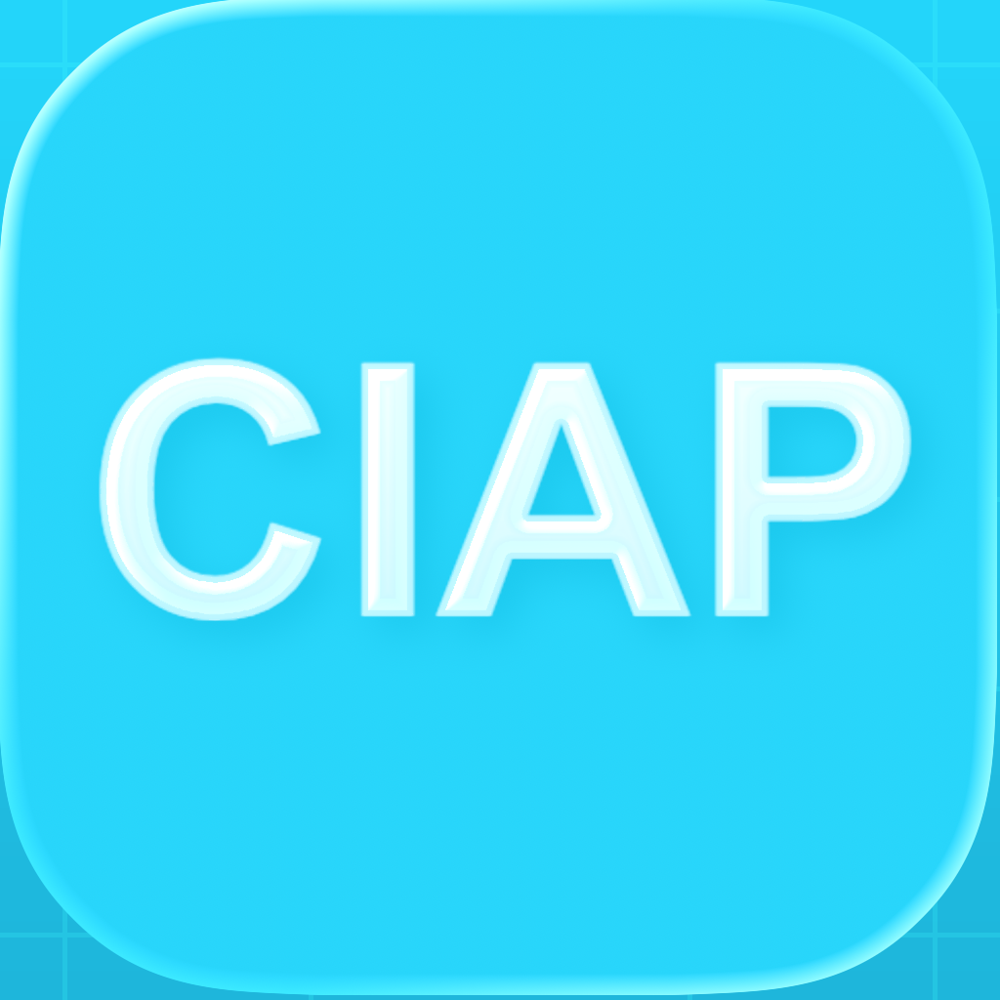
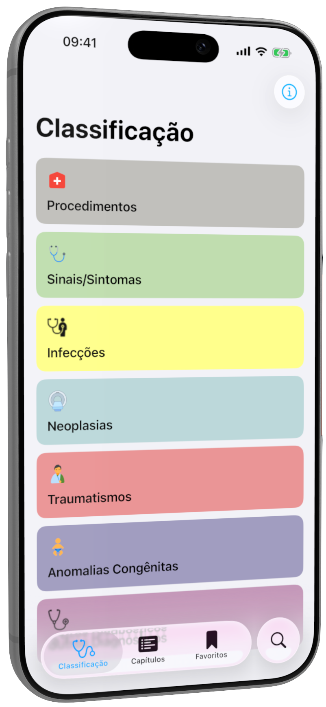
2017ano de lançamento
50 mil+downloads no iOS e Android
4,8nota na App Store
726códigos em 18 capítulos
Textos sobre o CIAP2.
Algumas descrições curtas para apresentar o projeto. Use como referência e adapte ao seu contexto.
CIAP2 é uma ferramenta gratuita para consultar a Classificação Internacional de Atenção Primária no iPhone, Android e navegador. Reúne busca rápida, uso offline, favoritos e conteúdo organizado para a rotina de profissionais e estudantes da saúde.
Lançado em 2017, o CIAP2 facilita a consulta aos 726 códigos da Classificação Internacional de Atenção Primária, organizados em 18 capítulos. Criado por Vanessa Dina Palomino Castillo e Ezequiel França dos Santos, é gratuito, sem anúncios e sem compras dentro do aplicativo, com versões para iPhone, Android e navegador. A experiência reúne busca, acesso offline e favoritos para apoiar a rotina de profissionais e estudantes da saúde. O projeto foi apresentado em dois congressos nacionais em 2019. O conteúdo da classificação é utilizado com autorização da Sociedade Brasileira de Medicina de Família e Comunidade (SBMFC).
CIAP2 é um projeto independente criado por Vanessa Dina Palomino Castillo e Ezequiel França dos Santos a partir da colaboração entre prática clínica em Medicina de Família e Comunidade e desenvolvimento de software. Desde 2017, o aplicativo evolui com foco em acesso simples, desempenho, privacidade e utilidade para a Atenção Primária à Saúde.
Imagens do produto.
Capturas atuais do aplicativo para iPhone e da versão web. Os arquivos abaixo podem ser baixados individualmente.
Aplicativo para iPhone
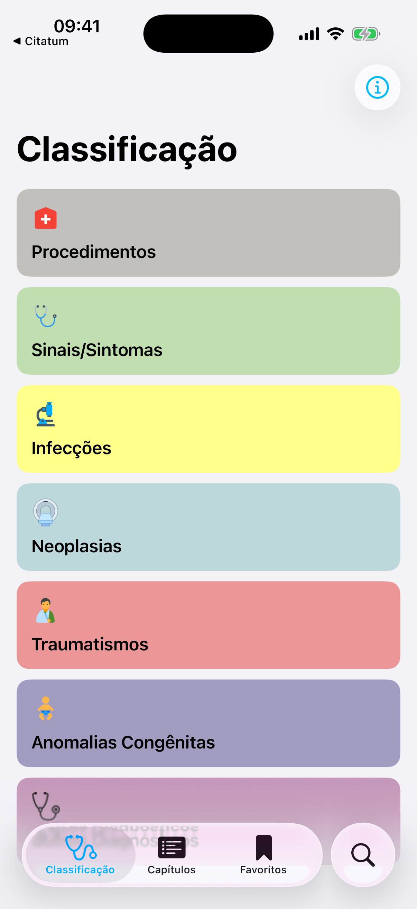
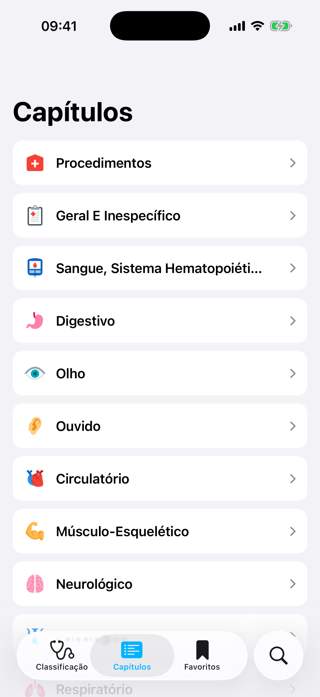
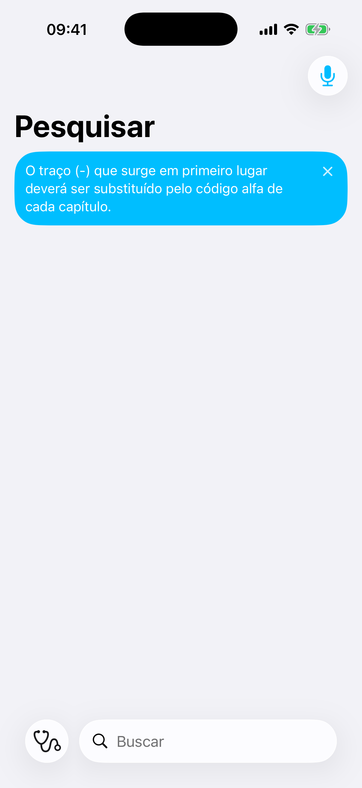
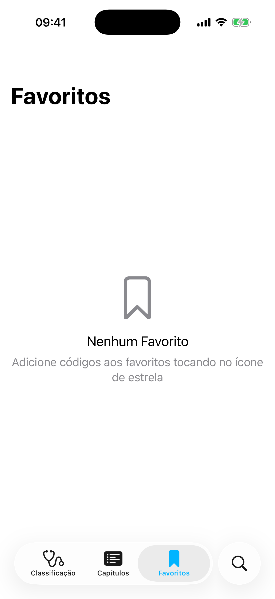
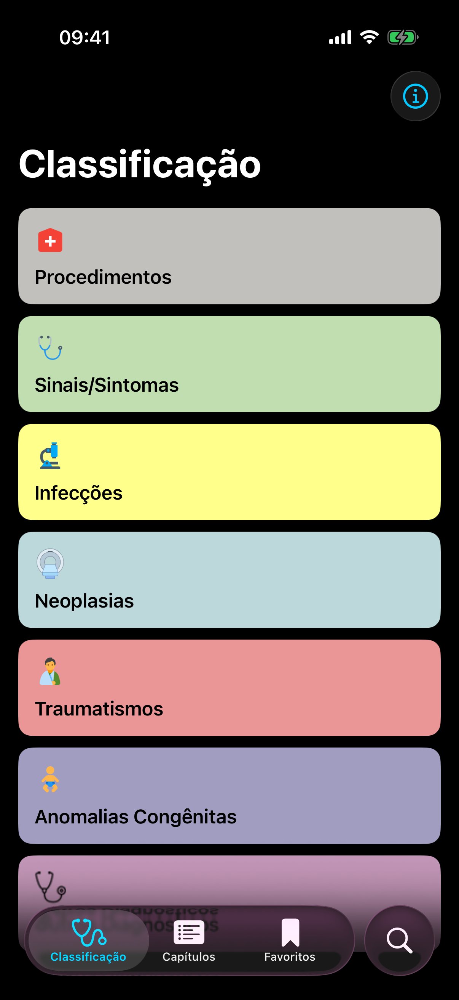
Versão web
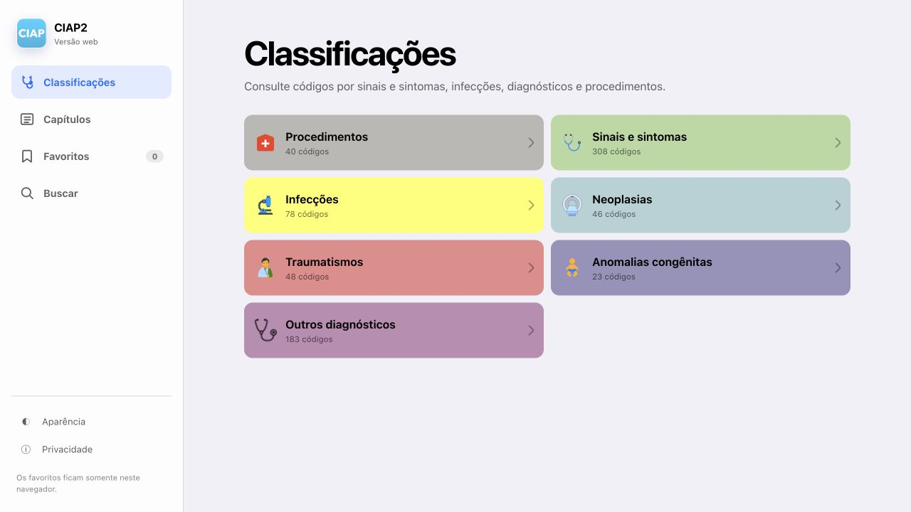
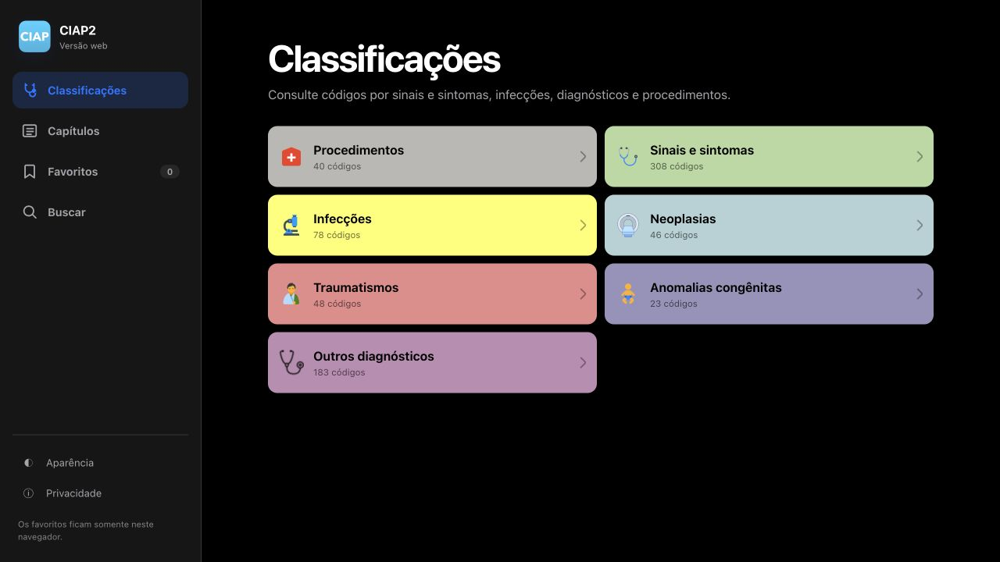
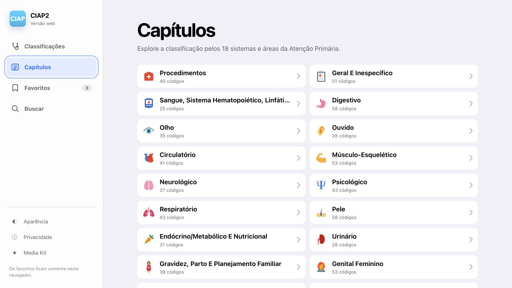
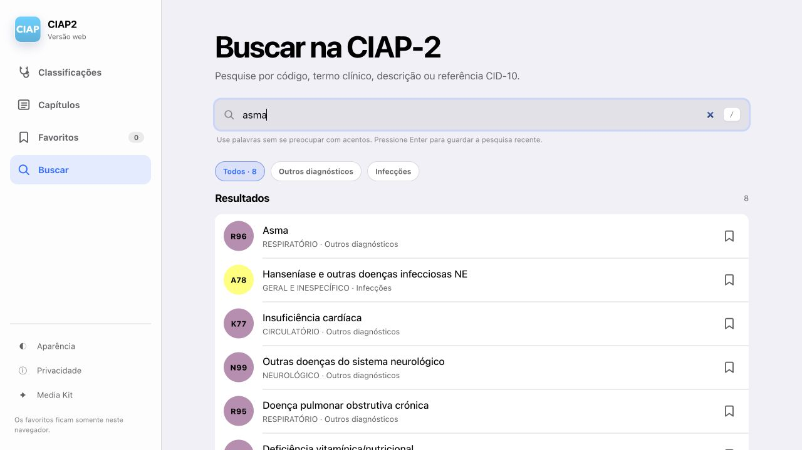
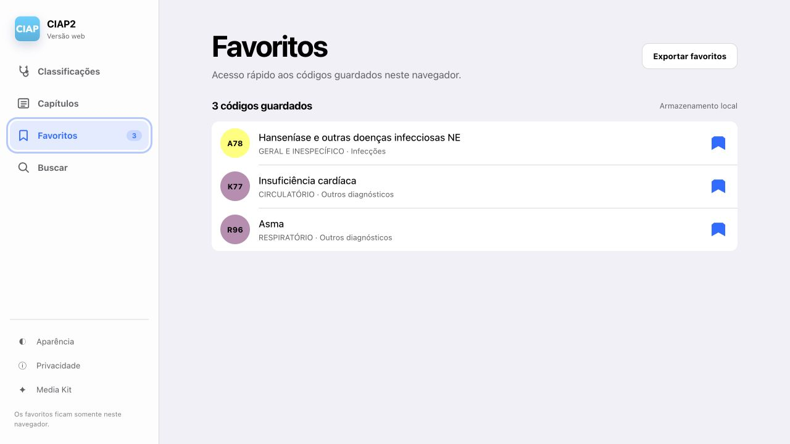
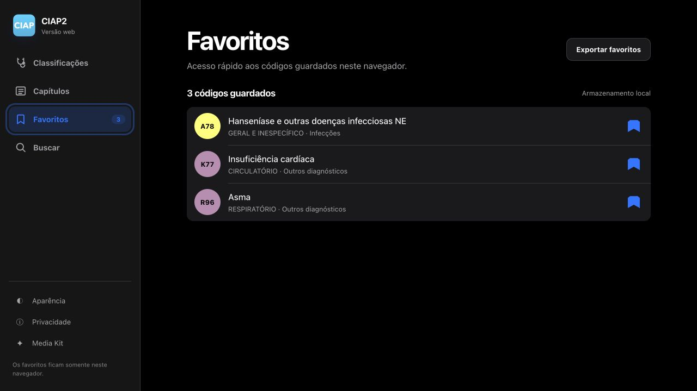
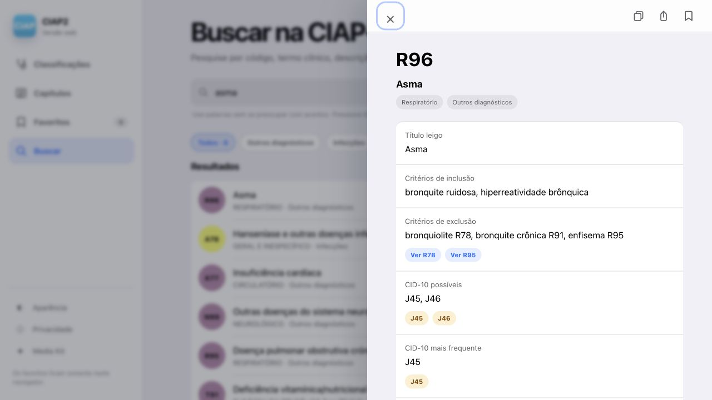
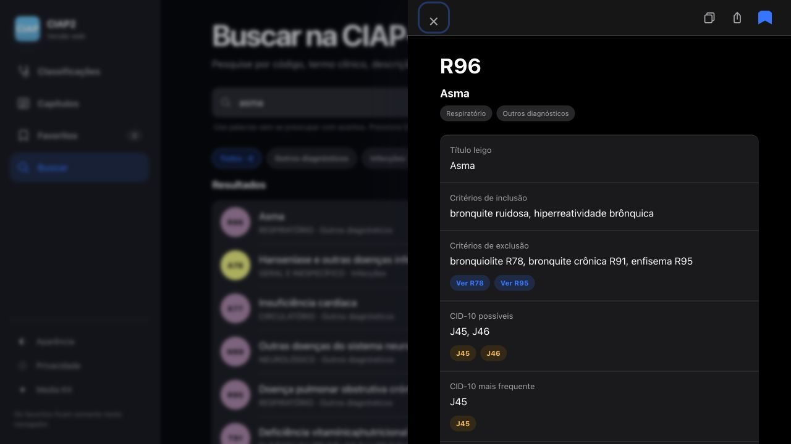
Marca e identidade.
Arquivos oficiais e regras simples para manter o CIAP2 reconhecível em qualquer contexto.
Uso correto
- Escreva o produto como “CIAP2” e a classificação como “CIAP-2”.
- Preserve as proporções, as cores e uma área de respiro ao redor do ícone.
- Não recorte, distorça, gire, aplique filtros nem recolora os arquivos.
- Não sugira endosso institucional além das informações declaradas neste kit.

{kind=link}
{kind=link}
{kind=link}
{kind=link}
{kind=link}
{kind=link}
{kind=link}
{kind=link}
{kind=link}
{kind=link}
{kind=link}
{kind=link}
{kind=link}
{kind=link}
{kind=link}
{kind=link}
#C1C0BC
Procedimentos
Procedimentos
#C0DEAF
Sinais e sintomas
Sinais e sintomas
#FFFF8C
Infecções
Infecções
#BCD8DA
Neoplasias
Neoplasias
#EA9596
Traumatismos
Traumatismos
#A19DC0
Anomalias
Anomalias
#C497B8
Outros diagnósticos
Outros diagnósticos
#2CC7EB
CIAP2
CIAP2
Direitos da classificação
A CIAP-2 é © WONCA (World Organization of Family Doctors). A edição brasileira foi publicada sob permissão da WONCA e é © 2009 Sociedade Brasileira de Medicina de Família e Comunidade (SBMFC), que detém os direitos de publicação em língua portuguesa. O conteúdo da classificação no CIAP2 é utilizado com autorização do Grupo de Trabalho de Prontuário e Classificação da SBMFC.
Uma história útil.
O CIAP2 começou como trabalho acadêmico e cresceu mantendo a mesma ideia: tornar uma classificação importante mais fácil de consultar.
Primeira versão
Vanessa Dina Palomino Castillo e Ezequiel França dos Santos criam o CIAP2 para apoiar a consulta à classificação.
Reconhecimento acadêmico
O projeto é apresentado no 15º CBMFC e no 9º Congresso Brasileiro de Telemedicina e Telessaúde.
CIAP2 no navegador
A versão web amplia o acesso ao conteúdo e mantém busca e favoritos diretamente no navegador.
Ficou com alguma dúvida?
Se precisar confirmar uma informação, pedir outro formato de imagem ou tiver alguma pergunta sobre o CIAP2, use a central de suporte.
support.ezequiel.app